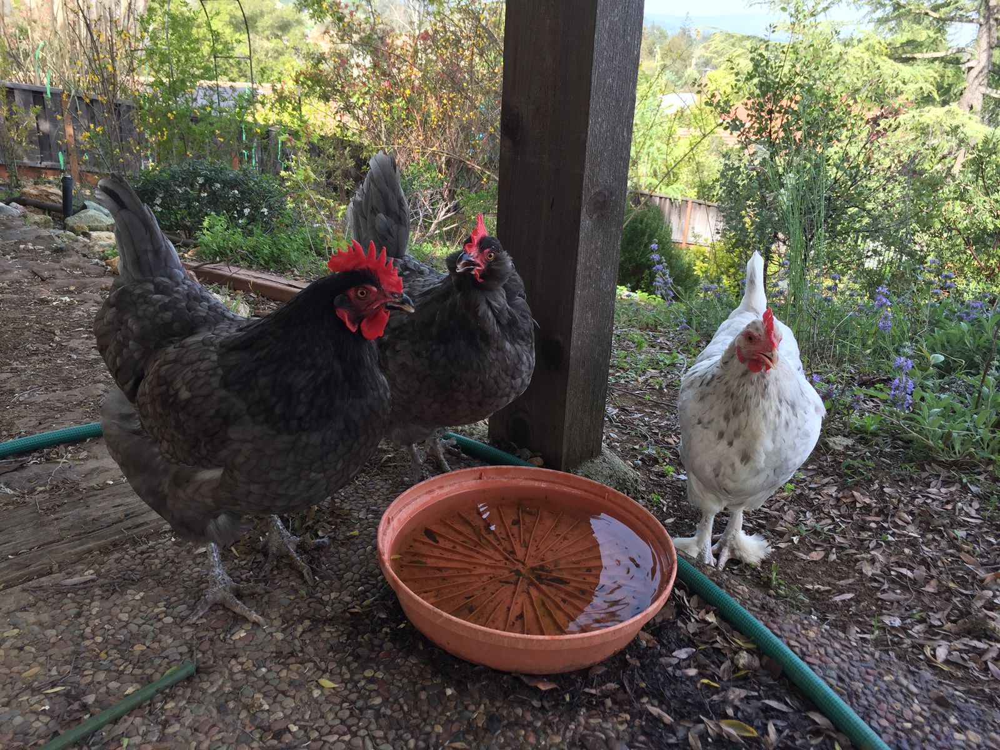

Taking Time to Reflect
This morning I slept in again until about 9. My appetite, which disappeared about a day ago after being uncharacteristically voracious, has still not returned, so I nibbled on some leftover skillet vegetables and an orange. I'll have some nuts and a granola bar later before lunch to keep up my energy.
Occasionally I get tired and lose my appetite like this, but it's not happened in months now. Over the years I have seen some doctors about it but they can't seem to find a source. Typically removing stress, eating well, and exercising solves the issue. The best case takes a couple days and the worst case has taken weeks or months. I found that trying to determine a root cause is a not helpful exercise and the best thing is just to understand that my body sometimes behaves this way and to work through it.
Having said all this, I would say I've been eating well and getting a decent amount of exercise. Though I have only been to two yoga classes in the almost four weeks that I've been on the west coast, I have done my fair share of skiing, walking, kayaking, biking, and hiking. I don't have any typical stressors in my life right now. I am not working and I haven't been too alarmed at seeing my bank account balance steadily drop.
Often, I've found stressors come from places that I'd least expect it and at times when I'd least expect it. Over the past few weeks, I've been packing a lot into my days and I haven't really had too much time to sit back and reflect. I've maybe read two chapters in my book since I left San Diego. My last several posts have also morphed into pretty uninteresting descriptions of my day with little interesting commentary. It would not be surprising if there is something stressing me out right now that I haven't spent the attention to discover.
Let's take a look at the next few days. I am meeting with friends for lunch and dinner today. Tonight and tomorrow night, I am staying at a friend's house, and we are spending the day together. On Wednesday morning, I depart north with no plans. I haven't booked any hotels or even looked up what to do. By Sunday I'd like to be in Portland, where I will be staying for three nights in a Yurt that might not have electricity or running water. I've been on the move for coming up on four weeks now, staying in one place for no more than three days.
There is something about not having a place to be settled that I find a bit discomforting. I sometimes wonder whether renting a camper van would have been a better choice for this trip. I could park it basically wherever and I would have had a constant place to retire to whenever I wanted. Right now, I really only feel grounded at night and in the early morning, so my day is always a blur. Renting a camper van probably would be about the same cost as what I am doing now. On the other hand, I am meeting new people and discovering new places the way I am traveling, and I much prefer driving a smaller car. So I think I overall prefer things the way that they are now.
Knowing that I have control over the next few days can be comforting. I know that it is about 8 hours to get from Oakland to Eureka on the coast. I found a cheap and comfortable hotel in Eureka that I can book today. I know that it is about 4 hours to get from Eureka to Grant's Pass, where my uncle's brother lives. I need to call him up, but I can do that later today. From there it looks like there are several towns before Portland on the coast, but I don't want to book any hotels yet as that would impose too strict a schedule.
I also know that writing things down like this is a good way to diffuse stress, whether I know its source or not. Normally I would just write this all down in some note on my phone. As I am writing this travel log, I figured that it is useful to publish it. It seems that many people think that this kind of travel is non-stop glamorous, but I know from close friends who have done it that it is usually not. And that's fine.
When starting this trip, I wanted to know what it feels like to not have to do anything, and I have realized that I don't really know how to do that. With empty time, I just fill it with something, usually too many things. I think I just want to relax, but usually I don't. I get stir crazy easily. And I get overwhelmed if I do too much. So I need to re-strike the right balance. I have the opportunity to do just that over the next few days.
Once I get to Portland, I will be spending a few days with my old roommate, who has been living a semi-nomadic life for the past four and a half years. He and his girlfriend have some fun things planned, including hiking Mount Hood. It's 30 miles and 6000 ft in elevation gain over two days, which is a bit more than double what I can typically do. It sounds like a lot of fun, though I might suggest that we find a mountain that is half as big.
OK, I need to get going for lunch soon. Here is a picture of some dinosaurs I saw this morning:
